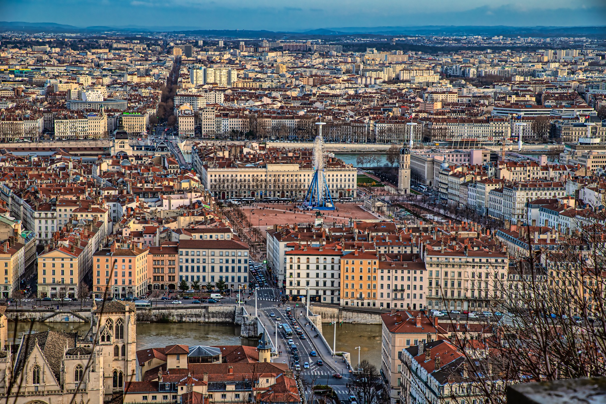

Stadt mit Haltung
Lyon verbindet roemisches Erbe, Renaissance-Quartiere und ein zeitgenoessisches Kulturprogramm. Die Stadt bleibt ruhig in der Form und stark im Inhalt.

Lyon verbindet roemisches Erbe, Renaissance-Quartiere und ein zeitgenoessisches Kulturprogramm. Die Stadt bleibt ruhig in der Form und stark im Inhalt.